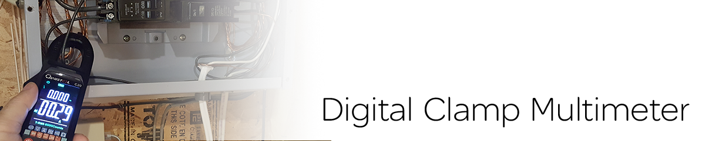

-
Home Inspection Tools of the Trade

Moisture meters are used to measure the percentage of moisture in a material such as drywall. Home inspectors look for abnormal moisture readings to confirm the presence of moisture, and are often used in conjunction with an IR thermal camera to confirm an anomaly is a moisture problem. There are two types of moisture meters, pinless and pin. Pinless is non-destructive, while a pin requires insertion into the material.

Infrared Radiation (IR) thermography uses a special camera to detect differences in Infrared radiation from objects not visible to the human eye. IR thermography is good at detecting temperature differences, which makes it useful in detecting heat/cold loss and moisture issues in the home. IR photos use gradient colours to represent different temperatures emitted from materials.
An infrared laser thermometer can measure the surface temperature of an object by reading its thermal radiation levels. This device can be used for measuring the temperature rise or drop of the HVAC system or for quick spot temperature readings of registers or running water. An IR laser thermometer is also useful in providing ambient temperature, humidity, and dew point readings in a house.
As standard procedure, inspectors provide a sample test of receptacles in every room of the house. The tester indicates if a receptacle is wired correctly and if ground fault receptacles are working. It shows if there is an open neutral/live wire/ground, live and ground reversed wired, or a missing ground. An incorrect receptacle can be dangerous, so this is an important test for a homeowner.

This is an essential tool for home inspectors to confirm the presence of open live wires in the home and to verify that it is safe to touch an electrical panel.
Not commonly used in a typical home inspection, but it can be used to evaluate which heating elements in electrical furnaces are defective. It can also be used to confirm the amperage of wires in the electrical panel if one suspects overcurrent.
Many homes today depend on natural gas as a fuel for their heat source. Home inspectors can use gas detectors to sense any natural gas leaks in the house.

The use of anemometers for home inspectors can be used to have a quantitative number for airflow from house registers. Although not standard practice in a general home inspection, it provides information on how even the heating/cooling airflow is throughout the house. Provided on request only.
Drones are important in inspecting the roof when the inspector cannot walk on the roof due to safety reasons, from too steep roofs, snow, rain, or parts of the roof inaccessible. Videos and photos are taken of the roof.
It is beyond the standard of practice for home inspectors to use carbon monoxide detectors. But if a home inspector thinks there may be a problem with the backdraft of a combustible appliance, such as a furnace, they may use a carbon monoxide detector to confirm a problem.
Safety is a priority during a home inspection. The home inspector may be required to enter areas that need personal protective equipment for safety. A home inspector may enter hundreds of attic spaces with blown-in insulation that may pose a health risk for the inspector. A respirator gas mask is ideal protection for the inspector. Crawlspaces may require a respirator mask and full coveralls for protection. Protective eyeglasses and gloves are important to use near electrical panels.

Ladder mounts are used for added safety and protection. When possible, the inspector will use a ladder mount that fits inside the gutters. Why? Since it fits inside the gutter, it can prevent gutter damage from the weight of the person and the ladder against it, because the weight is against the fascia instead of the gutter. The inspector will also use a Lock Jaw Ladder Grip. This device will lock the ladder to the gutter to prevent ladder movement. Using one or even both devices helps prevent the ladder from moving and helps keep the inspector safe. Safety is a priority during the inspection for everyone. No clients will be allowed on any ladder.
-
 Homeowner Tips
Homeowner Tips Replacing the Anode Tube
Replacing the Anode Tube
-
Sacrificial Anode
Did you know it may be possible to extend the lifespan of your water tank?
How?
Water circulating in your hot water tank eventually results in corrosion of the tank. Water tanks (gas, oil, or electric fuelled) use a “Sacrificial Anode” tube (made from magnesium, located on top of the water tank) that allows the water chemicals to “attack” the anode rod instead of the tank. In essence, it sacrifices itself for the tank. After years of use, it will not attract the corrosive elements of water anymore.Tip: You can replace the old anode rod with a new one. Check to see if it needs replacing. If it requires replacing, the best type is a flexible anode rod. Flexible rods allow installation with a short headroom and consist of multiple smaller rods attached. They can be found in most home improvement stores for around $50 or less.
-
What's in our Toolbag Videos
-
Ready for your first inspection?
Book CoachingCall us today at 416-275-5808 or book your inspection online.